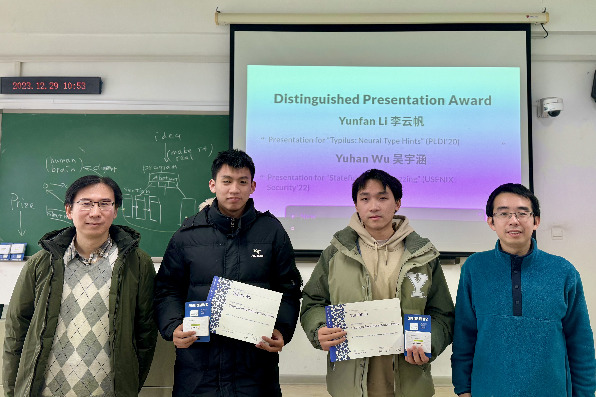
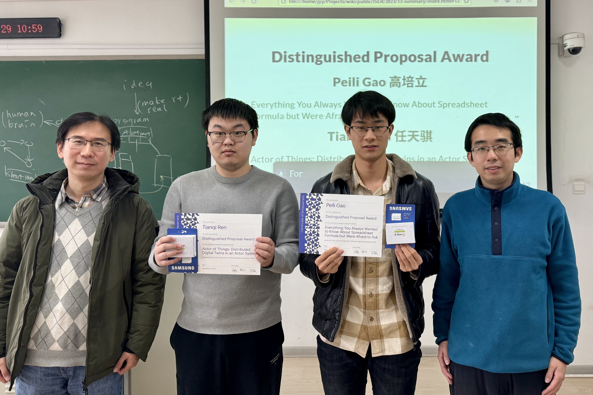

Introduction to Software Engineering Research (Fall 2023)
“Introduction to Software Engineering Research” is an introductory, English-taught international course for developing research experiences in software, systems, and programming languages. This course covers reading research papers, conducting rigorous research, writing and typesetting a research proposal, and ultimately, it helps students in identifying a research direction and succeeding in the competitive academic environment.
This course focuses on reading and writing:
- Reading and Presentation: A student’s graduate life will be compromised if one fails to stay tuned on the latest developments in their field. It is therefore crucial for attendees to strive to read as many relevant research papers as possible. While there are no shortcuts to this process, this class will provide some strategies to make it less painful.
- Writing and Experiments: Writing is a fundamental aspect of research communication. However, it can be particularly challenging for those whose first language is not English. In this class, attendees will have the opportunity to practice their writing skills by crafting a concise research proposal (up to 6 single-column pages) detailing the research project they are currently working on.
Congratulations to the award winners! The prize is OrangePi Zero 3 Mini PC.


Lectures
Received submissions. The final deadline for all assignments is Jan 28, 2023.